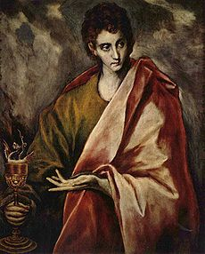

| Иоанн Богослов Материал из Википедии — свободной энциклопедии |
|  Апостол Иоанн (Эль Греко, 1594-1604) |
Иоа́нн Богосло́в, Иоа́нн Зеведе́ев (ивр. יוחנן «Йоханан») — один из 12-ти апостолов, автор
Евангелия от Иоанна, Книги Откровения и трёх посланий, вошедших в Новый Завет.
Память апостола Иоанна совершается в Православной церкви (по юлианскому календарю): 8 мая, 30 июня (Собор Двенадцати апостолов), 26 сентября (преставление), в Католической церкви и других западных церквях — 27 декабря. В Новом ЗаветеСвятой апостол и евангелист Иоанн Богослов был сыном Зеведея и Саломии, согласно преданию – дочери святого Обручника Иосифа, которая упоминается в числе жен, служивших Господу своим имуществом. Младший брат апостола Иакова. Был рыбаком, был призван Иисусом Христом в число Своих учеников на Генисаретском озере: оставив отца своего Зеведея в лодке, он, вместе со своим братом Иаковом, последовал за Христом (Мф.4:21; Мк.1:19).Братья Иаков и Иоанн в Евангелиях именуются сыновьями Зеведеевыми по имени их отца Зеведея, также, по сообщению евангелиста Марка (Мк.3:17). Иисус назвал братьев Воанергес (дословно «сыновья грома»), очевидно, за порывистый характер. Этот характер в полной мере проявился, когда они хотели низвести с неба огонь на самарянское селение (Лк.9:54); а также в просьбе дать сесть им в Царстве Небесном по правую и левую сторону от Иисуса (Мк.10:35-37). Из евангельских повествований следует, что Иоанн, наряду со своим старшим братом Иаковом, был в близких отношениях с апостолом Петром и вместе с ним входил в число приближенных Господом учеников. Вместе с Петром и Иаковом он стал свидетелем воскрешения дочери Иаира (Мк.5:37; Лк.9:51). Только их Иисус сделал свидетелями своего Преображения (Мф.17:1; Мк.9:2; Лк.9:28) и Гефсиманского моления (Мк.14:33). На Кресте Иисус поручил Иоанну заботиться о своей матери — Деве Марии. Иоанн упомянут в списках апостолов в Евангелии от Матфея (Мф.10:2), от Марка (Мк.3:17), от Луки (Лк.6:14), а также в Деяниях Апостолов (Деян.1:13). |
Писания апостола в Новом ЗаветеАпостолу традиционно приписывается авторство пяти книг Нового Завета: Евангелия от Иоанна, 1-го, 2-го и 3-го послания Иоанна и Откровения Иоанна Богослова (Апокалипсиса). Многие исследователи оспаривают авторство апостола. Имя Иоанн Богослов апостол получил из-за именования Иисуса Христа в Евангелии от Иоанна Словом Божьим. |
Дальнейшая жизньО дальнейшей жизни апостола известно только из церковных преданий. |
Миссионерский путьАпостол Иоанн Богослов, проповедующий на острове Патмос во время вакханалийСогласно преданию, после Успения Матери Божией апостол Иоанн, по выпавшему ему жребию, направился в Эфес и другие Малоазийские города для проповеди Евангелия, взяв с собой своего ученика Прохора. Находясь в городе Эфесе, апостол Иоанн непрестанно проповедовал язычникам о Христе. Проповедь его сопровождалась многочисленными и великими чудесами, так что число уверовавших увеличивалось с каждым днём. Во время гонения на христиан, начатого императором Нероном, апостол Иоанн, по преданию, был отведён в узах на суд в Рим. За исповедание своей пламенной веры в Иисуса Христа апостол был приговорён к смерти. Однако, выпив предложенную ему чашу со смертельным ядом, он остался живым. Также он вышел невредимым и из котла с кипящим маслом. После этого апостол был сослан в заточение на остров Патмос, где прожил много лет. |
СсылкаСогласно житию, когда Иоанн прибыл на остров Патмос, его проповедь, сопровождавшаяся многими чудесами, привлекла к нему всех жителей острова: он обратил в христианство большую часть его жителей, изгнал бесов из языческих храмов, исцелил многих больных.На острове Патмос апостол Иоанн удалился со своим учеником Прохором (известен только из церковного предания, ассоциируется с Прохором, апостолом от семидесяти) на пустынную гору, где совершил трёхдневный пост и молитву, после чего пещера, где они жили заколебалась и загремел гром. Прохор в страхе упал на землю. Апостол поднял его и приказал записывать слова, которые он будет произносить. «Аз есмь Альфа и Омега, начаток и конец, глаголет Господь, Сый, и Иже бе, и Грядый, Вседержитель» (Откр.1:8), — возвещал Дух Божий через святого апостола. Так около 67 года была написана Книга Откровения (Апокалипсис) святого апостола Иоанна Богослова. В ней, по мнению христиан, раскрыты тайны судеб Церкви и конца мира. |
ВозвращениеПосле длительной ссылки апостол Иоанн получил свободу и вернулся в Эфес, где продолжил свою деятельность, поучая христиан остерегаться возникающих ересей. Между 85 и 95 годами апостол Иоанн написал в Эфесе Евангелие. Он заповедал всем христианам любить Господа и друг друга, и этим исполнить закон Христов. Апостол любви — так именуется святой Иоанн, так как он постоянно учил, что без любви человек не может приблизиться к Богу и угодить Ему. В трёх своих Посланиях апостол Иоанн проповедует любовь к Богу и ближним, сам являясь для окружающих примером любви.Апостол Иоанн прожил на земле более 100 лет, оставшись единственным живым апостолом, видевшим Иисуса Христа во время Его земной жизни. Остальные апостолы в это время все уже скончались мученической смертью. Вся христианская Церковь глубоко чтила апостола Иоанна, как тайнозрителя судеб Божиих. На иконах святой апостол Иоанн изображается с орлом — символом высокого парения его богословской мысли. |
Завершение земного путиКогда настало время отшествия апостола Иоанна из этого мира, он удалился за пределы Эфеса с семью учениками и повелел ископать для себя в земле крестообразный гроб, в который лёг, сказав ученикам, чтобы они засыпали его землёй. Ученики с плачем целовали своего любимого апостола, но, не решаясь ослушаться, исполнили то, что он сказал. Они закрыли лицо его платом и закопали могилу. Узнав об этом, остальные ученики апостола пришли к месту его погребения и раскопали могилу, но не нашли в ней тела апостола, по особенному смотрению Божию переселённого в горний мир. Каждый год из могилы святого апостола Иоанна в мае, 8 (21) числа, выступал тонкий прах, который верующие собирали и которым исцелялись от болезней душевных и телесных. |
Воскрешение мёртвых апостоломИз жития апостола известны следующие случаи воскрешения им усопших:[1]* в Эфесе апостол Иоанн со своим учеником Прохором работали в бане. Однажды там умер некий юноша по имени Домн. Отец юноши, Диоскорид, узнав об этом, умер от скорби. Хозяйка бани обвинила Иоанна в смерти юноши и грозилась убить его. Помолившись, апостол Иоанн воскресил юношу, а затем его отца. * во время праздника в честь богини Артемиды, апостол Иоанн обвинил язычников в идолопоклонничестве, за что толпа забросала его камнями. По молитве Иоанна тотчас настала невыносимая жара, вследствие чего умерло до 200 человек. Оставшиеся в живых умоляли Иоанна о милости, и апостол воскресил всех умерших, в результате чего все воскресшие приняли крещение. * в Риме апостол Иоанн был осуждён на изгнание и отправлен на остров Патмос. На судне находились царские вельможи, сын одного из них, играя, упал в море и утонул. Вельможи стали просить Иоанна о помощи, но он отказал им, узнав, что они чтят языческих богов. Но утром, из жалости, Иоанн помолился Богу, и волна выбросила юношу на корабль. * на острове Патмос жил волхв Кинопс, который общался с нечистыми духами. Местные жители почитали Кинопса, как бога. Когда апостол Иоанн стал проповедовать Христа, жители острова призвали волхва Кинопса отомстить Иоанну. Апостол разоблачил бесовство Кинопса, и по молитве Иоанна морская волна поглотила волхва. Народ, поклонявшийся Кинопсу, трое суток ждал его у моря, изнемогая от голода и жажды, а трое детей умерло. Апостол Иоанн, помолившись, исцелил больных и воскресил умерших. * через три года апостол Иоанн направился проповедовать в другой город острова, где исцелял больных, а также воскресил сына жреца, умершего в бане. |